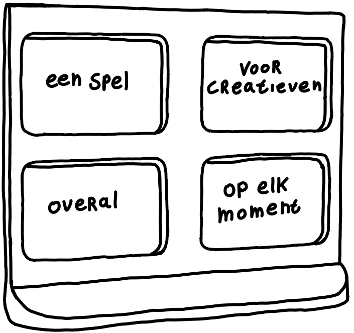

Marktgat is een spel waarbij je vergezochte situaties ontwikkeld voor hele specifieke opdrachten. Als resultaat zul je tot de gekste en meest uitgebreide ideeën komen. En dat binnen niet meer dan 15 minuten! Er zijn geen winnaars of verliezers in Marktgat. Spelers kunnen elkaar inspireren gedurende de rondes en/of aanmoedigen om hun tekeningen uit te breiden. Aan het einde van de vier rondes zullen er tekeningen staan die ieder zijn eigen oplossing bieden met ieder hun eigen unieke verhaal.
Marktgat bestaat uit één spelbord, vier whiteboards, vier whiteboard-stiften en een pak kaarten. Het doel van het spel is om een uitgebreide tekening te maken voor een heel specifiek vraagstuk. Eén speler doet de luikjes voor de gaten in het speelbord en vult aan de achterkant de kaartjes op de juiste plek. Eén speler start een timer van 1 minuut op bijvoorbeeld een telefoon en doet het luikje linksboven open. Dit onderwerp moeten alle spelers tekenen. Elke ronde wordt er een extra luikje geopend (in schrijfvolgorde) en zo telkens het onderwerp een stukje specifieker. Elke volgende ronde duurt steeds een beetje langer. Aan het eind van elke ronde presenteren spelers hun tekeningen aan elkaar. In volgorde krijgen de spelers te maken met: Een middel > Een doelgroep > Een locatie > Een actie/gebeuren. Spelers moeten hun tekening/uitvinding zo aanpassen dat het voldoet aan het gevraagde.

eindeloos speelplezierMarktgat bevat 40 speelkaarten opgedeeld onder vier categorieën. Om het spel te kunnen spelen moet er van elke categorie één kaartje gebruikt worden om zo een volle zin te vormen. Met de 40 kaarten die er beschikbaar zijn, zorgt dit voor 10.000 mogelijke combinaties aan zinnen om te tekenen! Het spel heeft hierdoor een vrijwel eindeloos aanbod aan variaties in opdrachten.